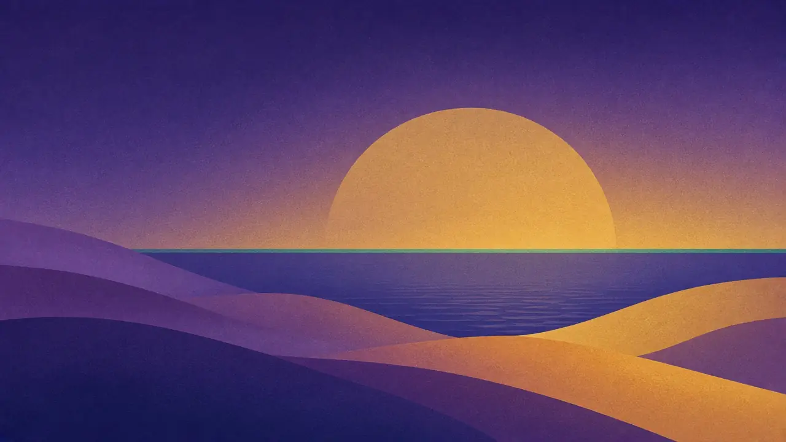
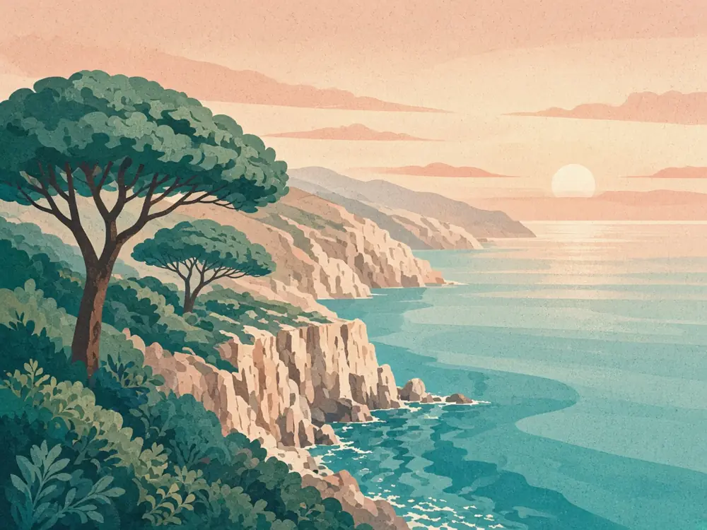
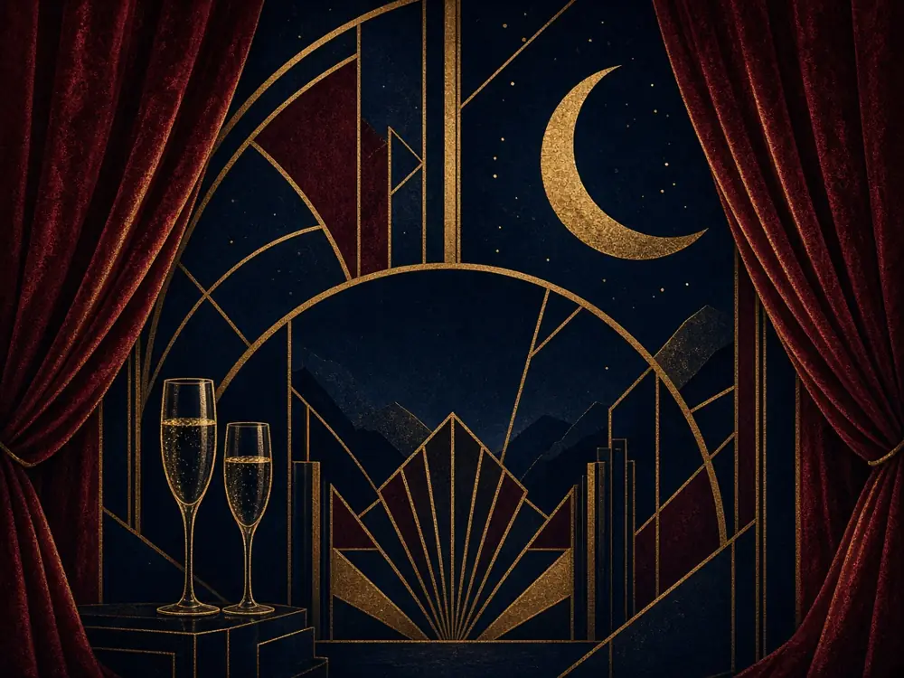
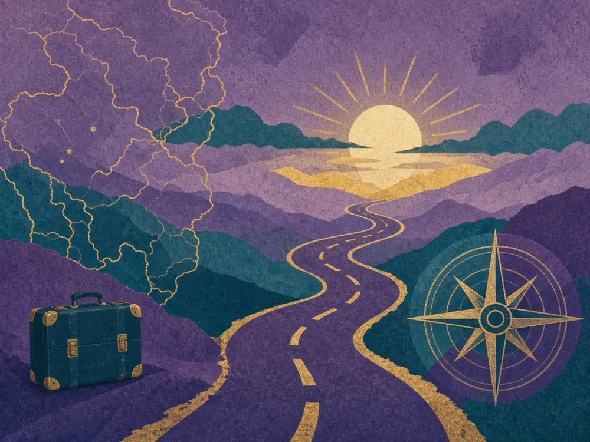

Numero 1 · Novembre 2026 · Editore ZDOS1.3
ARIAla rivista dell’aria aperta
e dell’intimità consapevole
Naturismo, vita libertina e viaggio, raccontati senza ammiccamenti: luoghi veri, fonti pubbliche, regole chiare. Ogni voce ha un nome, un posto e un link ufficiale.
Sfoglia il numeroPianifica il viaggio
- 24luoghi naturisti ufficiali in Italia
- 13centri certificati INF-FENAIT
- 6club con sito ufficiale
- 6articoli originali in questo numero
- 154link controllati il 28 novembre 2026
Numero corrente
ARIA N°1 ·
- 01Come scegliere una spiaggia naturista in ItaliaNaturismo · 4 min · Autorizzata, presidiata o solo tollerata: tre parole che cambiano tutto. Che cosa controllare prima di mettere in borsa l’asciugamano.
- 02Il primo giorno in un centro naturistaNaturismo · 3 min · Un campeggio o un resort naturista funziona con poche regole semplici. Eccole, prima che qualcuno te le debba spiegare.
- 03Consenso: cinque domande da farsi, e da fareConsenso · 3 min · Non è una formalità. È la parte di un incontro tra adulti che decide se resterà un bel ricordo.
- 04Istria naturista: tre indirizzi sulla stessa costaViaggi · 3 min · Valalta, Koversada e Solaris: tre centri storici nel raggio di pochi chilometri, ciascuno con le sue condizioni.
- 05Naturismo e legge in Italia: sei Regioni, nessuna norma nazionaleLegalità · 3 min · Che cosa si può fare, dove e con quali rischi. Una lettura per orientarsi, non un parere legale.
- 06Prima di entrare: come si legge il regolamento di un clubLifestyle · 3 min · Tessera, età, dress code, prenotazione, regole sulle foto: i club privati dichiarano tutto sul proprio sito. Basta saperlo cercare.
Editoriale
Nudi non significa senza regole.
Il naturismo è un modo di stare al mondo: il corpo come cosa ordinaria, il rispetto come regola. Il lifestyle libertino è un’altra cosa, che condivide con il primo un solo principio: tutto avviene tra adulti, per scelta, con un «sì» detto e ripetibile. ARIA tiene le due strade separate, ma le racconta con lo stesso metodo.
Il metodo è semplice. Pubblichiamo solo luoghi, club ed eventi che hanno un sito ufficiale raggiungibile e una fonte che si può aprire. Niente classifiche inventate, niente prezzi copiati da altri, niente foto di persone. Dove non esiste un’informazione verificabile, lo scriviamo e passiamo oltre.
Questo è il primo numero e vogliamo farlo crescere con chi legge: se trovi un errore o un link cambiato, scrivilo nella community e lo correggiamo.

01 · Naturismo e nudismo
Spiagge, centri e federazioni
In Italia il naturismo non ha una legge nazionale: esistono leggi regionali, spiagge riconosciute dai Comuni e centri certificati. Partiamo da chi li elenca ufficialmente.
Federazioni e associazioni
FENAIT · Federazione Naturista Italiana
Federazione nazionale, associata a INF-FNI. Elenca spiagge, centri e associazioni.
INF-FNI · International Naturist Federation
Federazione internazionale; calendario eventi e tessera INF.
A.N.ITA. · Associazione Naturista Italiana
APS dal 1966, federata FENAIT.
A.N.A.B. · Associazione Naturista Abruzzese
Mappa aggiornata di spiagge e strutture italiane.
UNAIT · Unione Naturisti Ambiente Italia
Associazione dei naturisti del Lazio.
3Venat · Tre Venezie Naturista
Associazione federata FENAIT.
ANAA-SFKK · Naturisti Alto Adige
Associazione federata FENAIT.
Liburnia · Associazione Naturista Umanista
Associazione federata FENAIT.
Spiagge e luoghi riconosciuti in Italia (24)
Elenco ufficiale FENAIT, «ordinato da nord a sud», dei luoghi riconosciuti dai Comuni. Alcune ordinanze si rinnovano ogni stagione: prima di partire controlla il Comune e la pagina della spiaggia.
-
Spiaggia fluviale del Sesia (Balangera)
-
Spiaggia fluviale del Trebbia
-
Lido di Volano
-
Spiaggia della Bassona
-
Spiaggia della Lecciona
-
Punta Combara
-
Nido dell’Aquila
-
Punta del Miglio
-
Spiaggia delle Tombe
-
Spiaggia di Acquarilli
-
Lido Punta Le Morge
-
Sabbie Nere
-
Spiaggia di Focene
-
Oasi naturista di Capocotta
-
Spiaggia della Termitosa
-
Spiaggia del Troncone
-
Stignano
-
San Saba – Rasocolmo
-
Spiaggia di Bulala
-
Porto Ferro
-
Baia delle Ninfe
-
Is Benas
-
Piscinas
-
Feraxi
Centri naturisti certificati INF-FENAIT (13)
Campeggi, B&B e resort che FENAIT inserisce nel circuito naturista certificato. Prenota sempre dal sito della struttura.
-
Campeggio
Camping Classe FKK
-
Campeggio
Cà Le Scope Camping Naturista
-
Campeggio
Il Costalunga
-
B&B
Casale del Valla
-
Spazio naturista
Ad Naturam · spazio 3Venat
-
B&B
B&B Borgo Corniola
-
Glamping
BNatural Naturism & Glamping
-
Campeggio
Ecocampeggio Sasso Corbo
-
Giardino naturista
Suncave Garden Naturist
-
Casa vacanze
Casa Vacanze La Sorgente
-
Resort
Resort Naturista Grottamiranda
-
Campeggio
Pizzo Greco Campeggio Naturista
-
Hotel / sito naturista
Club Le Peonie
In Europa
- Resort / campeggio
FKK Valalta
Campeggio naturista; stagione 2027 dall’1 maggio al 30 settembre. Il sito precisa che in loco non si prenotano le piazzole.
- Resort / campeggio
Koversada Uncovered Naturist Campsite
Naturista dal 1961; stagione 2027 dal 23 aprile al 10 ottobre.
- Resort / campeggio
Camping Solaris
Resort naturista con 2,5 km di costa, piazzole e appartamenti.
- Resort / campeggio
Euronat
Centro vacanze naturista sull’Atlantico.
- Resort / campeggio
Vritomartis Naturist Resort
Resort naturista sull’isola di Creta.
- Resort / campeggio
Costa Natura
Resort naturista sulla Costa del Sol; sede dell’EuNat Meeting 2025 (fonte FENAIT).
- Federazione
FFN · Fédération Française de Naturisme
- Federazione
DFK · Deutscher Verband für Freikörperkultur
- Federazione
DNH · Društvo naturista Hrvatske
- Federazione
British Naturism

02 · Lifestyle swinger
Club e serate, solo da fonti pubbliche
Qui trovi nome, città e sito ufficiale. Le informazioni descrittive sono quelle che i club stessi dichiarano pubblicamente. Orari, tessere, dress code e requisiti d’ingresso li decide ciascun locale: leggili sul loro sito.
- Club
Bad Romance
Piccolo club privé per coppie e donne single; riservato ai soci 21+, tesseramento in sede con documento d’identità.
- Club
Olimpo Club Privé
Club privato per soci maggiorenni, aperto giovedì, venerdì e sabato. Dichiara: consenso e rispetto sempre, niente telefoni né fotocamere in sala.
- Club
Infinito Club Privé
Club alle porte di Milano con sala da ballo e bar; serate a tema su prenotazione, informazioni sul sito.
- Club
Club Privé Milano 369
Club per coppie e single, serate a tema per un pubblico adulto.
- Club
Oops Barcelona
Club social per coppie nella parte alta della città.
- Club
Le Tantra
Club libertin situato nel Village Naturiste di Cap d’Agde.
ZDOS non è affiliata a nessuno dei locali citati e non riceve compensi per queste segnalazioni. Le descrizioni sono sintesi di testi pubblici dei siti ufficiali e possono cambiare.
03 · Consenso, etichetta, sicurezza
Le regole che valgono ovunque
Il «sì» è esplicito
Il silenzio, un sorriso o un biglietto d’ingresso non sono consenso. Chiedi, ascolta la risposta, chiedi di nuovo se qualcosa cambia.
Il «no» è definitivo
Non si insiste, non si negozia, non si offre da bere per far cambiare idea. Chi riceve un «no» ringrazia e si allontana.
Parola di stop: ROSSO
Nelle community ZDOS «ROSSO» ferma tutto, subito, senza spiegazioni da dare. Nei locali valgono le regole del locale: conoscile prima.
Niente foto, niente riprese
Mai fotografare o filmare altre persone senza permesso scritto. Nei luoghi naturisti e nei club è quasi sempre vietato.
Solo maggiorenni, sempre
Nessuna persona minorenne o che dichiari di esserlo ha posto in questi spazi. Chi ha un dubbio sull’età non procede.
Lucidi per scegliere
Alcol e sostanze alterano il consenso. Se non sei lucido, o non lo è chi hai davanti, ci si ferma.
Salute e protezione
Informati su test e protezione e parlane prima, non durante. Il tuo medico e i servizi sanitari pubblici sono la fonte giusta.
Privacy degli altri
Non rivelare nomi, volti o frequentazioni altrui. Quello che succede lì resta lì, a meno che non sia un abuso: in quel caso si segnala.
Viaggiare in sicurezza
- Dì a una persona di fiducia dove sei e quando rientri.
- Scegli strutture con sito e contatti ufficiali; diffida di annunci che chiedono pagamenti anticipati fuori dai canali di prenotazione.
- Al mare: protezione solare, acqua, rispetto della flora e delle aree di nidificazione segnalate.
- In caso di abuso o pericolo chiama il 112 (numero unico di emergenza in Italia e nell’UE).
04 · Legalità
Cosa dice la legge, in sintesi
Nudismo. Secondo FENAIT, in Italia la pratica del naturismo non è regolata da una legge nazionale. Hanno una norma propria sei Regioni (Piemonte, Lombardia, Veneto, Emilia-Romagna, Abruzzo, Sardegna) e alcuni Comuni riconoscono spiagge naturiste. Fuori da queste aree autorizzate, restare nudi in luogo pubblico può portare a sanzioni. Fonte: FENAIT · Il naturismo e la legge
Club privati. I locali citati si dichiarano riservati a soci maggiorenni con tesseramento. Entrare significa rispettarne il regolamento. Le persone minorenni non possono accedere in nessun caso.
Altri Paesi. Croazia, Francia, Spagna, Grecia e Germania hanno regole proprie, spesso più permissive nei centri certificati e più severe altrove. Informati prima presso la federazione nazionale (le trovi nella sezione Naturismo).
Quanto sopra è informazione generale a scopo editoriale, non consulenza legale. Per un caso specifico rivolgiti a un avvocato o al Comune competente.
05 · Le testate
Le riviste del settore
Riviste e newsletter del mondo naturista che segnaliamo. Le schede sono nostre, sintetizzate da quanto dichiarano le redazioni sui propri siti: nessun testo o logo copiato. Per il lifestyle non citiamo riviste: quelle che abbiamo trovato sono dismesse, non raggiungibili o di taglio esplicito, e non rientrano nei criteri di ARIA.
- Internazionale · Newsletter bimestrale
FOCUS
Raccoglie notizie e approfondimenti dalle federazioni nazionali. Disponibile in sette lingue, dal giugno 2023 anche in italiano; archivio dal 2008.
- Regno Unito · Rivista dei soci, trimestrale
BN Magazine
Rivista dei soci con eventi, viaggi, campagne, club e storie personali. L’archivio PDF parte dall’autunno 2004; l’ultimo numero indicato è il 249 (autunno 2026).
- Francia · Rivista ufficiale, 4 numeri l’anno
Naturisme Naturellement Nu
Rivista ufficiale della federazione francese dal 2008, inviata ai soci per posta; sul sito è consultabile l’elenco storico dei numeri.
- Germania · Rivista federale, 6 numeri l’anno
FreiKörperKultur
Rivista della federazione tedesca con notizie dai club, calendario sportivo ed eventi. Accanto, la guida biennale «FKK-Direkt» con oltre 125 club e resort.
- Regno Unito · Rivista indipendente, bimestrale
Naturist Life
Magazine britannico dedicato a vacanze, spiagge, club e luoghi del naturismo, con interviste ai protagonisti del movimento.
06 · Calendario verificato
Date con fonte
Elenchiamo solo date che abbiamo letto sulla pagina ufficiale indicata il 28 novembre 2026. Se un evento non ha una fonte raggiungibile, non lo pubblichiamo.
Il brindisi di fine anno
Serata per soci 21+ e per chi vuole conoscere il club; apertura 22:30. Il 31 dicembre il club resta chiuso.
Capodanno 2027
Serata di Capodanno, ore 20:30 secondo il calendario del club.
After party di Capodanno
Evento in calendario sul sito del club; informazioni e prenotazioni dai contatti ufficiali.
International Naturist Indoor Beach Volleyball Tournament
Torneo organizzato dalla Federazione Francese di Naturismo.
Giornata Mondiale del Naturismo (emisfero nord)
Tradizionalmente la prima domenica di giugno; le federazioni possono organizzare eventi dall’1 all’8 giugno.
18° Internationaler Naturistenlauf
Corsa naturista internazionale, dalle 11:00 alle 18:00.

07 · Prenota il viaggio
Alloggi e auto a noleggio
Link diretti alle ricerche pubbliche per località. ZDOS non ha accordi di affiliazione con questi servizi e non mostra prezzi: li vedi sul sito di destinazione. Per i centri naturisti, prenota direttamente sul loro sito.
Per zona
Roma · Ostia · Fiumicino
Alloggi · Booking.comAlloggi · AirbnbAuto · Booking.comAuto · DiscoverCars
Milano e Brianza
Alloggi · Booking.comAlloggi · AirbnbAuto · Booking.comAuto · DiscoverCars
Ravenna · Bologna
Alloggi · Booking.comAlloggi · AirbnbAuto · Booking.comAuto · DiscoverCars
Toscana · Etruria · Elba
Alloggi · Booking.comAlloggi · AirbnbAuto · Booking.comAuto · DiscoverCars
Genova · Liguria
Alloggi · Booking.comAlloggi · AirbnbAuto · Booking.comAuto · DiscoverCars
Torino · Monferrato
Alloggi · Booking.comAlloggi · AirbnbAuto · Booking.comAuto · DiscoverCars
Venezia · Veneto
Alloggi · Booking.comAlloggi · AirbnbAuto · Booking.comAuto · DiscoverCars
Abruzzo · Pescara
Alloggi · Booking.comAlloggi · AirbnbAuto · Booking.comAuto · DiscoverCars
Puglia · Brindisi
Alloggi · Booking.comAlloggi · AirbnbAuto · Booking.comAuto · DiscoverCars
Calabria · Lamezia
Alloggi · Booking.comAlloggi · AirbnbAuto · Booking.comAuto · DiscoverCars
Sardegna nord · Olbia
Alloggi · Booking.comAlloggi · AirbnbAuto · Booking.comAuto · DiscoverCars
Sardegna sud · Cagliari
Alloggi · Booking.comAlloggi · AirbnbAuto · Booking.comAuto · DiscoverCars
Sicilia · Catania · Palermo
Alloggi · Booking.comAlloggi · AirbnbAuto · Booking.comAuto · DiscoverCars
Istria · Croazia
Alloggi · Booking.comAlloggi · AirbnbAuto · Booking.comAuto · DiscoverCars
Cap d’Agde · Occitania
Alloggi · Booking.comAlloggi · AirbnbAuto · Booking.comAuto · DiscoverCars
Gironda · Atlantico
Alloggi · Booking.comAlloggi · AirbnbAuto · Booking.comAuto · DiscoverCars
Costa del Sol
Alloggi · Booking.comAlloggi · AirbnbAuto · Booking.comAuto · DiscoverCars
Barcellona
Alloggi · Booking.comAlloggi · AirbnbAuto · Booking.comAuto · DiscoverCars
Creta
Alloggi · Booking.comAlloggi · AirbnbAuto · Booking.comAuto · DiscoverCars
Booking.com, Airbnb, DiscoverCars: nomi dei rispettivi proprietari, citati solo per indicare dove porta il link. Le pagine di ricerca di terzi possono chiedere un controllo anti-bot al primo accesso.
08 · Aggregati
Entra nella community ZDOS
Una community di adulti per parlare di naturismo, viaggio, eventi e regole, con moderazione attiva. Ingresso solo 18+, consenso sempre, parola di stop ROSSO.
Telegram · OurVelvetHubDiscord · ZDOS
- Vietato ogni contenuto con minori o con soggetti dall’aspetto minorile.
- Niente foto di altre persone senza consenso; niente doxxing.
- Nessuna promessa di guadagno, nessuna vendita di incontri.
- Chi infrange le regole viene allontanato.